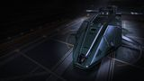

Hardpoints
1 Large · 4 Medium (Gauss + AX MC)
Five hardpoints (one large, four medium), two military slots and a 540 armour base for ~13.5M Cr at the lowest Federal rank. It carries a real AX battery — four Gauss on the mediums plus a large AX multi-cannon — and hardens two modules with Guardian reinforcement. But the weakest shields of the Federal line and a ponderous turn mean it absorbs Thargoid lightning rather than dodging it. An honest entry-grade Xeno platform, outclassed by the agile mediums but cheap enough to learn in.

This ship's 1–100 suitability rating reflects its fully-engineered fit for this role, scored against every ship in the role. See how ships are rated.
Point the cheapest Federal warship at the Thargoids and you get a surprisingly capable budget AX brawler. The Federal Dropship's five hardpoints — one large, four medium — mount a full Gauss battery plus a large AX multi-cannon, and its two military slots take Guardian Module Reinforcement to harden the modules that Thargoid lightning loves to strip. A heavy 540 armour base lets it stand in caustic and lightning damage that would shred a thin hull, all for ~13.5M Cr and the lowest Federal rank.
The reason it sits at 73 rather than up among the AX mediums is specific and honest: it cannot dodge. The Dropship is slow, turns ponderously and has the weakest shields of the Federal line, so it must absorb the lightning a Chieftain or Krait simply flies around — and in AX, evasion is survival. Its military slots are only class 4, so its module hardening is shallower than a Corvette's or Challenger's, and its Gauss-heat handling trails the premium hulls. It out-tanks the Mamba and matches the lighter mediums for raw mounts, but the agile, modern AX ships dodge and out-fight it.
Learning AX cheaply: low-tier AX Conflict Zones, Cyclops and Basilisk practice, and Federation-aligned anti-Xeno work where a painless rebuy lets you fly aggressively while you build the skills — and the Federal rank — for a heavier Xeno platform later.
Four things make the Dropship a credible budget Xeno hunter:
It's slow, turns poorly and has the weakest base shield of the Federal trio — it cannot dodge a Thargoid's lightning the way an AX medium can, so it must absorb it. Its military slots are only class 4, so module hardening is shallower than a Corvette's; four utilities cap the defensive kit; and Gauss runs it hot fast. The Chieftain, Krait Mk II and Challenger all dodge and out-fight it. Its case is value and durability, not evasion.
A full Gauss battery and heavy 540 armour earn the 73, but a ponderous turn it can't translate into dodging the lightning is the hard limiter.
The 73/100 headline is a verdict against the anti-Xeno role's priority-ordered factors. Each factor carries a weight (its share of 100); this hull earns part of each based on how it performs against the whole field. The points sum to the rating.
| Role factor | Score | Why this score |
|---|---|---|
| Hardpoints for Gauss | 22/25 | Five mounts — 1 Large, 4 Medium — put three Guardian Gauss plus a Guardian Shard on the mediums and an Enhanced AX multi-cannon on the large; mount count for a medium-pad hull is strong, though only class-2 Gauss seats limit per-gun output. |
| Heat capacity & management | 13/20 | Gauss bites the heat budget fast and only four utilities allow two heat-sink launchers; heat handling trails the premium hulls, forcing trigger discipline and silent-running resets to stay out of the danger zone. |
| Hull tank & reinforcement room | 17/20 | A 540 heavy armour base layered with Guardian HRP across an 8-slot optional bank reaches ~3,000+ effective armour, but the two military slots are only class 4, so module hardening is shallower than a Corvette's. |
| Agility | 11/25 | 180/300 m/s with a ponderous turn and 580 t hull mass; even A-rated and Dirty-Drive thrusters stay modest — it cannot dodge Interceptor lightning the way an agile Chieftain or Krait does, the role's decisive weakness. |
| Caustic handling & support slots | 10/10 | Four utilities and a deep optional bank carry a caustic sink, decontamination limpet, two Guardian MRP and stacked Guardian HRP for caustic-resistant tanking — solid support, though four utility mounts cap the defensive kit. |
| Weighted total | 73/100 | Matches the headline suitability rating for this ship in this role. |
Weights are an editorial decomposition of the role's stated priority order — not an in-game formula. Bar length shows how fully each factor is earned; the longest factors carried the score, the shortest are where it gave points away. See how ships are rated.
Both tables rate ships for anti-Xeno combat specifically. The role column is the hardpoint loadout — the basis for an AX weapon suite. Evasion, hardening and heat management matter as much as raw mounts.
| Ship | Class | Hardpoints | Pros & cons vs Federal Dropship | Rating |
|---|---|---|---|---|
| Alliance Chieftain | Medium | 2L 1M 3S | Agile; dodges lightning; cheap; no rankFewer military bays for its tank | 90 |
| Federal Gunship | Medium | 1L 4M 2S | Seven mounts; tougher; class-7 distributorHigher rank; even slower and clumsier | 82 |
| Alliance Crusader | Medium | 1L 2M 3S | SLF decoy; 3 crew; agile tank; no rankFewer Gauss mediums; pricier | 79 |
| Federal Assault Ship | Medium | 2L 2M | Far faster and more agile; bigger mountsHigher rank; fewer mediums and optionals | 77 |
| Federal Dropship this | Medium | 1L 4M | — this hull (baseline) | 73 |
| Mamba | Medium | 2L 2M | Fast straight-line Gauss/rail platformGlassy; can't turn-fight; fewer mounts | 70 |
Among the AX mediums the Dropship is the budget tank: it fields more Gauss mediums than the FAS or Crusader and out-armours the glassy Mamba, but every faster rival can dodge the lightning it must eat. The Gunship is the same chassis done heavier — more mounts, more tank, a class-7 distributor — at a higher rank. The Dropship's edge is being the cheapest hull here that still mounts a full Gauss battery and two Guardian MRP.
| Ship | Class | Hardpoints | Pros & cons vs Federal Dropship | Rating |
|---|---|---|---|---|
| Imperial Cutter | Large | 1H 2L 4M | Highest shield tank in the game; fasterImperial Duke rank; large pad; can't dodge | 90 |
| Anaconda | Large | 1H 3L 2M 2S | Eight mounts; vast internals; no rankCostly; ponderous; large pad | 88 |
| Federal Corvette | Large | 2H 1L 2M 2S | The Federal AX apex the grind leads toRear Admiral rank; ~188M Cr; large pad | 86 |
| Type-10 Defender | Large | 4L 3M 2S | Even higher armour; more mounts; no rankFar slower; large pad; feeble shields | 86 |
The large AX warships out-tank and out-gun the Dropship in every respect — but each demands a large pad, far more credits, and usually a steep rank. The Dropship is rung one of the Federal road that ends at the Corvette: fly it for AX bonds and Federal rank now, and you're paying down the grind for the apex Xeno hull later.
At ~13.5M Cr the Dropship is the cheapest AX-capable Federal hull, gated only by the low Midshipman rank. A working AX fit — Gauss and AX multi-cannons (free Guardian/AX unlocks), two Guardian MRP, A-rated cores and a bi-weave buffer — runs to roughly ~28M Cr, rising past ~45M Cr engineered, with a tiny ~2M rebuy that lets you fly it like you mean it.
It is the AX starter, not the destination. If you're learning the role, the cheap hull and painless rebuy make every death a lesson rather than a loss. Once you can hold Gauss on a heart reliably, climb the Federal ladder toward the Corvette — or step sideways into an agile Chieftain that dodges what the Dropship has to absorb.
The real value here is the ~2M rebuy. Buy the hull, unlock Gauss and AX weapons, and treat the Dropship as the forgiving trainer it is — lose it freely while you learn the dance, and save the deep credits and engineering for the heavier Xeno platform you graduate to.
A budget AX armour-tank: Guardian Gauss on the mediums for heart damage, an Enhanced AX multi-cannon on the large mount for swarm and caustic missiles, Guardian reinforcement in both military slots and the optionals, and the four utilities run hard on caustic and heat. Initial is buy-only; A-Rated adds the unlocked AX/Guardian kit; Engineered hardens hull, shield, heat and mobility.
| Slot | Initial · buy-only | A-Rated · no eng | Engineered | Notes |
|---|---|---|---|---|
| Hardpoints | ||||
| Large 1 | — | 3C Enhanced AX Multi-Cannon (Gimballed) | (No blueprint available) | Gimballed Enhanced AX multi-cannon clears scout swarms and shoots down caustic missiles; AX weapons cannot be engineered. |
| Medium 1 | — | 2B Guardian Gauss Cannon (Fixed) | (No blueprint available) | Guardian Gauss is the heart-damage weapon — fixed, pre-engineered, and brutally power- and heat-hungry. |
| Medium 2 | — | 2B Guardian Gauss Cannon (Fixed) | (No blueprint available) | Second fixed Gauss; three on the mediums concentrate the anti-heart burst that ends an Interceptor. |
| Medium 3 | — | 2B Guardian Gauss Cannon (Fixed) | (No blueprint available) | Third fixed Gauss — pre-engineered from unlocks, so no blueprint applies. |
| Medium 4 | — | 2A Guardian Shard Cannon (Fixed) | (No blueprint available) | Guardian Shard Cannon shreds the swarm and exerts hearts at close range; pre-engineered, no blueprint. |
| Utility Mounts | ||||
| Utility 1 | — | 0E Xeno Scanner | (No blueprint available) | Xeno Scanner reads Interceptor variant and exposes the hearts; scanners carry no blueprint. |
| Utility 2 | — | 0I Caustic Sink Launcher | G1 Ammo Capacity (no experimental effect) | Optional / low-priority — Ammo Capacity adds caustic-sink charges. Clears caustic damage in Thargoid fights. |
| Utility 3 | — | 0I Heat Sink Launcher | G1 Ammo Capacity (no experimental effect) | Optional / low-priority — Ammo Capacity adds heat-sink charges. Dumps heat for silent running and Thermal-Vent resets. |
| Utility 4 | — | 0I Heat Sink Launcher | G1 Ammo Capacity (no experimental effect) | Optional / low-priority — Ammo Capacity adds heat-sink charges. Dumps heat for silent running and Thermal-Vent resets. |
| Core Internals | ||||
| Bulkheads | Lightweight Alloy | Military Grade Composite | G5 Heavy Duty + Deep Plating | |
| Power Plant | 6E Power Plant | 6A Power Plant | G5 Overcharged + Thermal Spread | Powers hungry Gauss plus shield and cells; Overcharged adds headroom, Thermal Spread bleeds the extra heat. |
| Thrusters | 6E Thrusters | 6A Thrusters | G5 Dirty Drive Tuning + Drag Drives | A-rate + Dirty Drives recover what little mobility the heavy hull allows. |
| Frame Shift Drive | 5E Frame Shift Drive | 5A Frame Shift Drive | G3 Increased Range + Mass Manager | A-rated with G3 Increased Range to reach AX sites; combat needs no jump monster. |
| Life Support | 5E Life Support | 5A Life Support | G5 Lightweight (no experimental effect) | D-rate to save mass, Lightweight trims more; life support has no experimental effect. |
| Power Distributor | 6E Power Distributor | 6A Power Distributor | G5 Charge Enhanced + Super Conduits | A-rate this FIRST — Gauss is immensely capacitor-hungry; Charge Enhanced + Super Conduits feed the recharge. |
| Sensors | 4E Sensors | 4D Sensors | G5 Lightweight (no experimental effect) | Drop to D and go Lightweight; AX combat needs no sensor range, so save the mass. |
| Fuel Tank | 4C Fuel Tank | 4C Fuel Tank | (No blueprint available) | Stock C tank; fuel capacity is fixed and cannot be engineered. |
| Military Slots | ||||
| Military 1 | — | 4D Guardian Module Reinforcement | (No blueprint available) | Guardian Module Reinforcement spreads caustic and penetrating-hit damage across the internals; from unlocks, not blueprints. |
| Military 2 | — | 4D Guardian Module Reinforcement | (No blueprint available) | Second Guardian MRP — the Dropship's whole AX case is refusing to die, so both military slots harden the cores. |
| Optional Internals | ||||
| Size 6 | — | 6C Bi-Weave Shield Generator | G5 Thermal Resistant + Hi-Cap | Bi-weave regenerates fast under fire; Thermal Resistant + Hi-Cap give a thermal-hard buffer over the armour tank. |
| Size 5 | — | 5D Guardian Hull Reinforcement | (No blueprint available) | Guardian HRP adds caustic- and thermal-resistant effective armour; not engineerable. |
| Size 5 | — | 5D Hull Reinforcement | G5 Heavy Duty + Deep Plating | Standard HRP takes Heavy Duty + Deep Plating — the cheapest large multiplier on effective armour. |
| Size 4 | — | 4D Guardian Hull Reinforcement | (No blueprint available) | More Guardian HRP for Thargoid-resistant armour; from unlocks, no blueprint. |
| Size 3 | — | 3D Guardian Module Reinforcement | (No blueprint available) | Guardian MRP protects the cores from caustic penetration; not engineerable. |
| Size 3 | — | 3E Decontamination Limpet Controller | (No blueprint available) | Decontamination Limpet Controller strips caustic build-up off the hull mid-fight; controllers carry no blueprint. |
| Size 2 | — | 2D Guardian Hull Reinforcement | (No blueprint available) | Last Guardian HRP tops off the layered armour tank. |
| Size 1 | — | 1E Cargo Rack | G5 Expanded Capacity (no experimental effect) | Optional — Expanded Capacity adds cargo space; worth it for dedicated haulers. Holds cargo. |
| Open in planner / Export | ||||
| Open in Coriolis | open | open | open | One-click open at coriolis.io. |
| Open in EDSY | open | open | open | One-click open at edsy.org. |
| Copy SLEF | Copies the raw Ship Loadout Export Format for that state. | |||
With the weakest shields of the Federal line, the Dropship leans on armour and Guardian hardening — it survives by absorbing the lightning, not dodging it. Put Gauss on the mediums for heart damage, an AX multi-cannon on the large mount for swarm, and fill both military slots and the optionals with Guardian reinforcement. Run heat and caustic kit hard; Gauss bites into the heat budget fast.
Earn Midshipman and buy the hull (~13.5M Cr). Buy-only, the Dropship fits nothing but stock cores — 6E power plant, thrusters and distributor, 5E FSD and life support, 4E sensors, the stock 4C fuel tank and the free Lightweight Alloy bulkheads it ships with (540 effective armour).
Every hardpoint, utility, military and optional slot stays empty (—) at this stage: the whole AX battery and all Guardian reinforcement come from material unlocks, not the shipyard.
That kit — three Guardian Gauss cannons and a Guardian Shard Cannon on the mediums, an Enhanced AX multi-cannon on the large mount, two Guardian MRP, Guardian HRP, the Xeno scanner, a caustic sink and two heat sinks — waits until you've earned it at the relevant Guardian and AX sites.
AX-fitting priority for the budget tank:
The Dropship earns its rating by surviving — prioritise Military Grade bulkheads, the two Guardian MRP and a layered hull tank over chasing DPS. It can't dodge, so it has to refuse to die — and when the canopy goes, 5A life support keeps you breathing long enough to finish the kill or withdraw.
AX engineering hardens hull, shield, heat and mobility; AX/Guardian weapons have limited engineering. Pin blueprints for remote G1→G5 application; visit in person for experimentals.
| Module | Blueprint | Experimental | Engineer |
|---|---|---|---|
| Power Plant (6) | Overcharged (G5) | Thermal Spread | Hera Tani |
| Thrusters (6) | Dirty Drive Tuning (G5) | Drag Drives | Professor Palin / Mel Brandon |
| Power Distributor (6) | Charge Enhanced (G5) | Super Conduits | The Dweller |
| Bi-Weave Shield (6) | Thermal Resistant (G5) | Hi-Cap | Lei Cheung |
| Bulkheads | Heavy Duty (G5) | Deep Plating | Selene Jean |
| Hull Reinforcement (5) | Heavy Duty (G5) | Deep Plating | Selene Jean |
| Frame Shift Drive (5) | Increased Range (G3) | Mass Manager | Felicity Farseer |
Moderate — standard G5s across class-6 cores and a modest defensive suite, plus the Guardian-tech grind for weapons and reinforcement. As the AX trainer it rarely needs maxing; the Guardian unlocks are the real cost. Ask for exact per-blueprint or unlock counts if needed.
Approximate progression across the three states (figures are representative, not exact rolls):
| Stat | Initial | A-rated | Engineered |
|---|---|---|---|
| Armour (eff.) | 540 (Lightweight) | ~1,050 (Mil Grade) | ~3,000+ (Mil Grade HD + HRP) |
| Shield (MJ) | low | ~210 | ~450 (bi-weave) |
| Module hardening | none | 2 Guardian MRP (4) | 2 MRP + optionals |
| Breach window (LS) | 5:00 (5E) | 25:00 (5A) | 25:00 (5A + lightweight) |
| AX firepower | medium | medium-high | medium-high (Gauss + AX MC) |
| Agility (dodge) | poor | poor | modest (still can't dodge) |
Military Grade bulkheads nearly double the base hull at A-rated, and engineered the Dropship's effective armour climbs into the thousands once the Heavy-Duty HRP stack layers on top. Two Guardian MRP soak the lightning, 5A life support gives a 25-minute breach window for the inevitable canopy hit, and a full Gauss battery ends Interceptors steadily. It stays slow and can never dodge like a medium — so it wins, when it wins, by refusing to die. That makes it a sturdy, forgiving AX trainer rather than a front-rank Xeno hull.
Wherever Thargoids are fought at the lower difficulty tiers — AXCZ, Cyclops/Basilisk hunts, Scout clearance, Maelstrom edge work. The Dropship is the ship you learn AX in before you graduate to a heavier Xeno platform.
The Federal Dropship is the honest budget entry to anti-Xeno combat: five mounts for a full Gauss battery, two military slots for Guardian hardening, and a heavy 540 armour base for ~13.5M Cr at the lowest Federal rank. It scores 73 — respectable for its guns, hardening and price, but behind the agile mediums — because it's slow, weak-shielded and simply cannot dodge the lightning it has to soak. It's where you learn AX cheaply, not where you stay.
Figures on this page are verified against the sources below.